CLICK this link → openoffice.org/download
T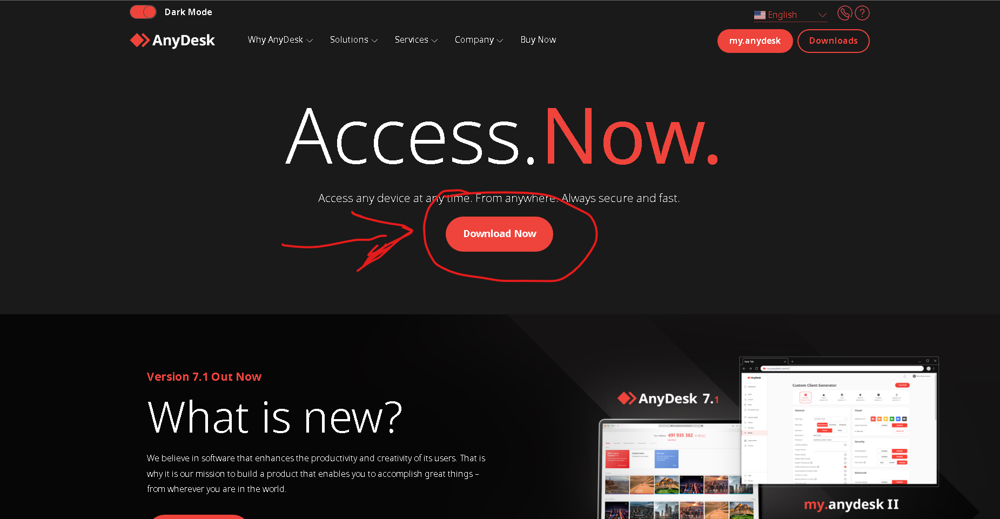
Then click “Download”
When the download completes click on “Open file”
T<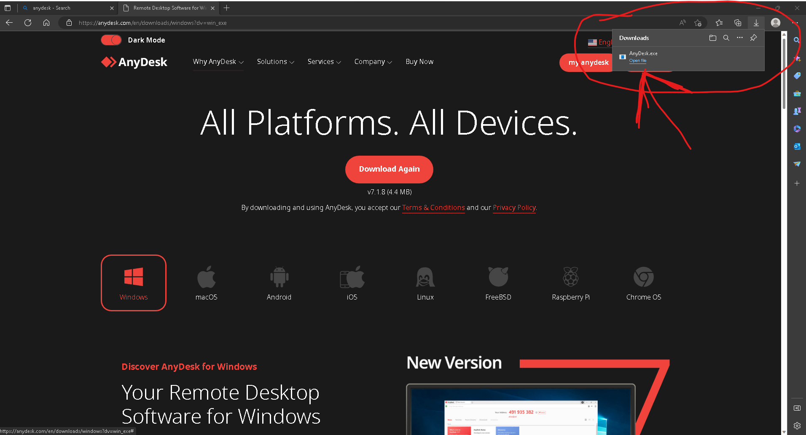
(If the downloads window goes away, Hold Ctrl and press j to bring it back up)
"It may warn you that this file can be harmful to your computer. It does this with all .exe(executable) files. It is simply a safety warning.. Ignore it and continue. The file is safe."
Also if you get a screen like this (if you don’t get this window ignore this)
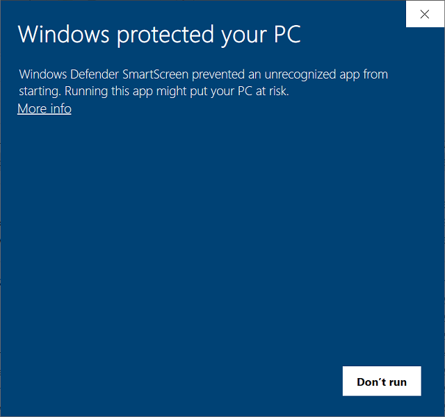
Click “More info” then “Run anyway”
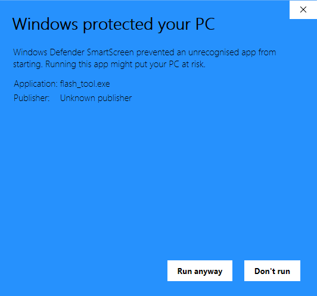
Click “Next”
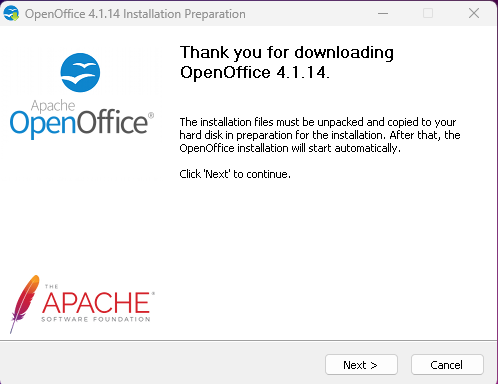*
Click “Next”
"
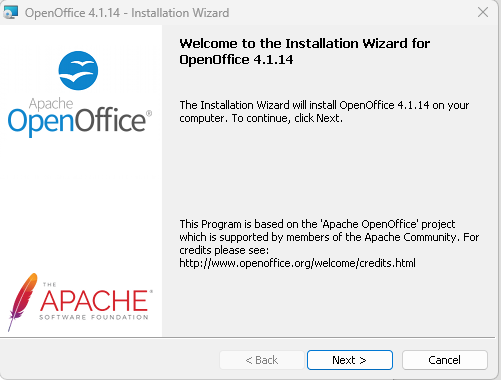
** Click “Next”
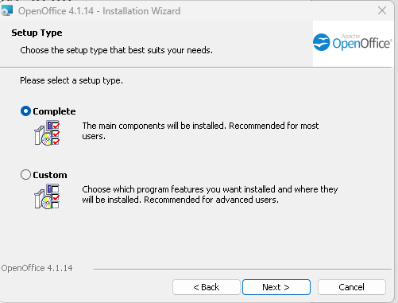
**Click “Unpack”
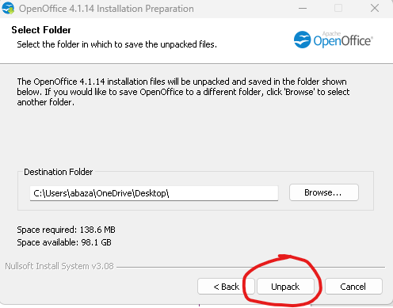
** Wait for the installer to finish its checks. This may take a few minutes.
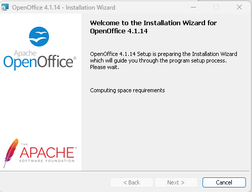
** When it is finished make sure the box is checked and looks just like this one then click on “Install”
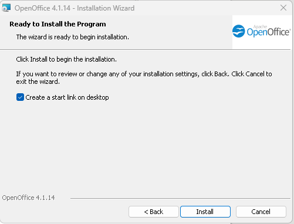
** Wait for the installer to finish. This may take a few minutes.
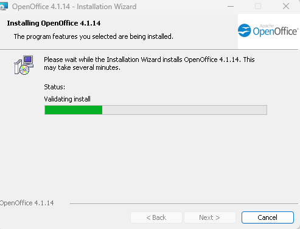
** When it is complete click “Finish”
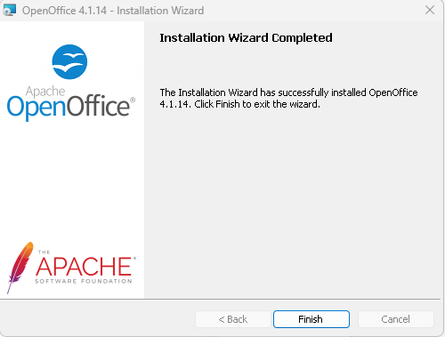
** You should now see this Icon somewhere on your desktop. Click on it anytime you want to open Apache openoffice.
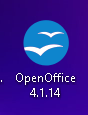